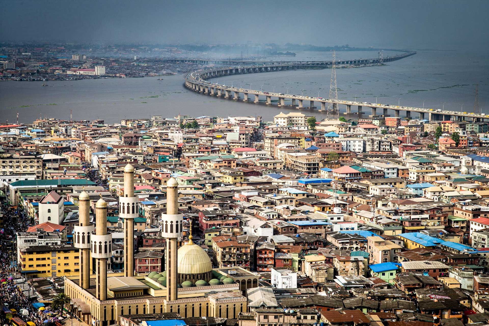
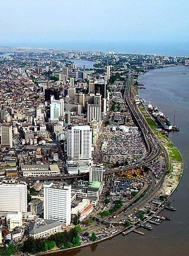
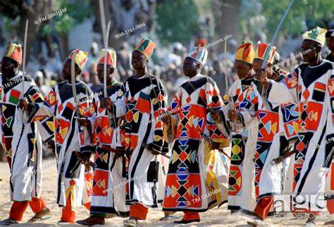

Explore Nigeria
The Giant of Africa
Geography
History
People and Culture
Nature
Geography

Nigeria, the "Giant of Africa," is located in West Africa and boasts a diverse landscape. From the lush tropical rainforests of the south to the arid savannahs of the north, the country is rich in natural features. Key landmarks include the Niger River, Zuma Rock, the Jos Plateau, and the Niger Delta, one of the world’s largest wetlands.

Nigeria's history is marked by ancient civilizations, like the Nok culture, and powerful kingdoms such as Benin and Oyo. After British colonization, Nigeria gained independence in 1960. Today, it is Africa's most populous nation and a leader in culture, economy, and innovation.
People and Culture

With over 200 ethnic groups and 500+ languages, Nigeria is one of the most culturally diverse nations on Earth. Major ethnic groups include the Hausa-Fulani, Yoruba, and Igbo. Festivals like the Durbar and Eyo, Afrobeat music, and traditional dishes like Jollof rice and suya reflect the vibrancy of Nigerian life.
Nature

Nigeria is home to stunning wildlife and breathtaking natural attractions. National parks like Yankari and Cross River showcase elephants, gorillas, and rare bird species. Waterfalls such as Erin-Ijesha and beaches like Tarkwa Bay highlight the country’s natural beauty, making it a haven for nature lovers.
To know more about Nigeria, click on Learn more